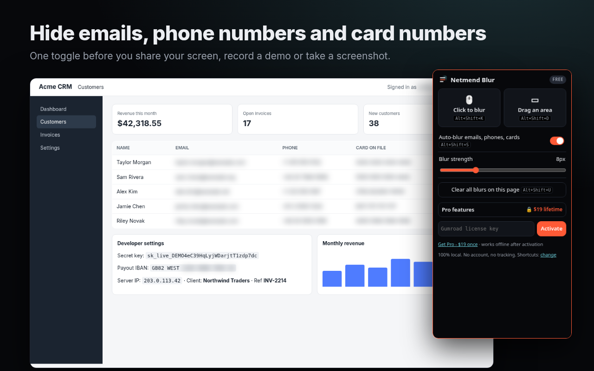

Netmend Blur hides emails, phone numbers, card numbers, API keys or anything you click, right inside the page. Record demos, tutorials and screenshots with nothing to fix in post.

Hover, click, done. Any text, image, table cell or form field.
Draw a box over charts, videos, canvases or maps.
Emails, phone numbers and card numbers (Luhn-checked) blurred as they appear, even in live apps.
Alt+Shift+K click mode, Alt+Shift+D area, Alt+Shift+S auto-blur, Alt+Shift+U clear.
From a soft blur to completely unreadable.
No account, no tracking, no servers. Nothing on the page ever leaves your browser.
Sales demos with real customer data. Support calls inside admin panels. Tutorials, courses, Loom videos, webinars, docs screenshots. Developers with a cloud console open.
No. Detection is pattern-based and runs in your browser. The only network call is a license check with Gumroad when you activate Pro.
Yes. The blur is applied to the page itself, so any tool that captures your browser tab or screen sees it blurred.
Free works only on the tab where you click it. Pro's per-site memory asks for access one site at a time, only when you turn it on.
No automated tool is perfect. Netmend Blur cuts accidental leaks; always check your screen before sharing sensitive material.
If Pro doesn't work for you, email us within 14 days for a full refund.